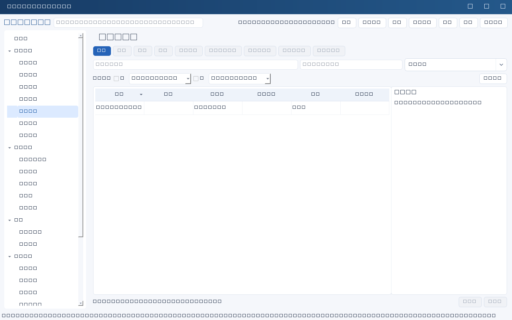
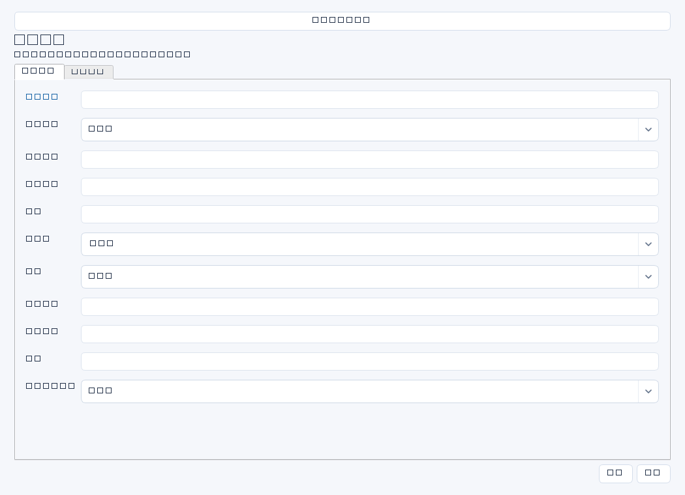

记录服务中断或异常的受理、处置、恢复、业务确认和根因整改，形成事件时间线。输入来自监控、用户报障、工单和操作日志。


操作步骤与资料获取
- 收到监控告警或用户报障后，核实系统和业务影响，记录实际受理时间、级别与负责人；先保证记录事实准确。
- 按时间线补充检查、判断、操作和结果；重大操作另按组织变更流程批准，保存相关日志与截图位置。
- 技术恢复后请业务验证关键交易，分别记录恢复时间和业务确认；不把告警消失直接等同服务恢复。
- 复盘根因和改进措施，另建后续任务并关联；事件关闭不意味着整改任务已完成。
字段逐项说明
| 操作 / 字段 | 详细说明 |
|---|---|
| 名称 | 事件标题，强制非空；建议日期＋系统＋现象。 |
| 系统ID | 受影响系统；非空时强制引用有效systems记录。 |
| 受理时间 | 开始受理事件的实际时间；非空时强制有效ISO日期时间，如2026-04-10 09:05，可含秒或时区。 |
| 影响范围 | 受影响业务、用户、地点、时段和可用性情况；建议注明统计来源及是否估算。 |
| 级别 | 按组织事件分级规则填写，如P1/P2及依据；文本字段，没有内置分级计算。 |
| 负责人 | 协调恢复及沟通的人名，建议明确当班交接。 |
| 状态 | 使用通用状态，如进行中、待确认、已关闭；本模块关闭没有强制根因或业务确认门槛。 |
| 处置过程 | 按时间写检查、操作、执行人和结果，并留日志、工单和变更编号；文本不执行命令。 |
| 恢复时间 | 服务恢复的实际时间，非空时强制ISO日期时间；软件不强制其晚于受理时间，建议人工核对统一时区。 |
| 业务确认 | 记录确认人、时间、验证交易和结果及证据位置，不只写“已恢复”。 |
| 根因 | 区分已证实原因、诱因和仍待验证假设，引用日志或复现证据；未知时如实写调查计划。 |
| 后续任务ID | 可选整改任务关系；非空时强制引用有效tasks记录，需先有任务，不自动生成。 |


示例（仅演示）
| 操作 / 字段 | 详细说明 |
|---|---|
| 名称 | 2026-04-10 ERP接口积压 |
| 系统ID | |
| 受理时间 | 2026-04-10 09:05 |
| 影响范围 | 总部仓库入库同步延迟，约120单待处理，来源接口队列统计 |
| 级别 | P2；核心流程延迟但可人工登记 |
| 负责人 | 陈晨 |
| 状态 | 待确认 |
| 处置过程 | 09:10检查队列；09:20确认连接池耗尽；按批准方案重启接口服务；09:45积压消除。日志见INC-0410目录 |
| 恢复时间 | 2026-04-10 09:45 |
| 业务确认 | 10:00赵敏抽查20单同步成功，确认纪要待归档 |
| 根因 | 初步怀疑异常重试未释放连接，待研发复现验证 |
| 后续任务ID |
形成闭环
- 核对时间线、业务验证与恢复证据，确认影响结束后再人工关闭事件。
- 无法当场确认根因时保留调查任务，不编造根因以满足形式闭环。
- 对后续任务独立跟踪到验证完成，复盘材料与业务确认原件保存在受控位置。
常见误区与边界
- 技术指标恢复但业务单据仍未处理，过早宣布恢复。
- 受理与恢复时间只填日期会触发日期时间校验；顺序错误则需人工发现。
- 以为保存后续任务ID会自动触发任务执行或通知。